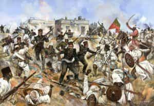
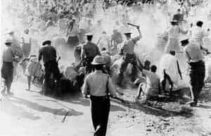

Eusebius is a Prairie Canadian who likes gun rights, traditional values, and economics.


We are operating in times of oppression. The alt-left is vastly more violent than the alt-right, murdering five police officers, shooting a Republican Representative, and condoning Islamic extremism. With a controlled media, we are rendered weak when a single, stupid, neo-Nazi, who may have been panic-stricken, rams his car into Charlottesville protesters. As Edward Herman and Noam Chomsky write in their 1988 treatise, Manufacturing Consent, “the media serve, and propagandize on behalf of, the powerful societal interests [globalists] that control and finance them.”
However, this should not discourage us: similar wars have been fought, and won, in the past. In particular, I document the reasoning behind Mohandas K. Gandhi’s peaceful struggle for Indian independence. Although Gandhi had a few personal demons, he offers us, in the dissident right, a template for strategic action amidst a sea of present-day troubles.
This is not a general call for nonviolence, which is merely a strategy. I have no doubt that if civil conflict erupted, we on the right would triumph against cranky leftist cat ladies. Yet any victory would be pyrrhic at best. We need to tussle towards long-lasting success, and in this case, nonviolence offers the best opportunity.

British colonialism, mostly due to Christian missions, brought much good to India: schools, hospitals, and universities. Regardless, colonialism was, overall, a cruel master; The Bengal Famine, Amritsar Massacre, and Partition were simply tips of the imperial iceberg. Fundamentally, no nation should be enslaved, a sentiment the American Founding Fathers recognized.
In 1857, perhaps inspired by former revolutions, Indian troops (sepoys) rebelled against their British colonial masters. Initially, the sepoys used the element of surprise to great effect, seizing important towns and forts. However, the superior British forces fought back, massacring Indian sepoys and civilians in Delhi. By December, 1858, the so-called Indian Mutiny had been fully suppressed.
British newspapers revelled in propaganda during this period, and were particularly drawn to rape reports. The Times, for example, claimed that, in Delhi, bloody-eyed, brown-skinned sepoy men had raped 48 innocent English girls. The report, however, was from a clergyman based in Bangalore, 2,000 km from Delhi. Indeed, this tradition of false sexual assault reports continues to this day, as Western feminists claim that India is a rape-infested urban jungle.
A decade after the Indian Mutiny, Gandhi was born. The Mutiny’s memory, of course, would never fade from British memory – much like Charlottesville may never fade from the left’s.

Degenerate leftists have propagated the myth that Gandhi was a pacifist. On the contrary, Gandhi once wrote, in “Doctrine of the Sword,”
…where there is only a choice between cowardice and violence, I would advise violence.
He even believed in the right to bear arms, and thought that Indians should gain firearms training, rather than “crawl like a worm at the bidding of a bully.”
In other words, nonviolence, for Gandhi, was a strategy, not an overarching philosophy. He knew that Indians were outgunned, and that efforts at armed rebellion would only result in publicity fiascoes. Nonviolence, on the other hand, exposes the enemy for what he is: pure, calculated evil.
The practical effects of nonviolence are threefold:
Ninety years after the Indian Mutiny, in 1947, India attained independence, at least partially thanks to Gandhi’s tireless struggles.

Fighting violently against the alt-left is too costly; the police, academia, and the media back BLM and antifa. Although we have been winning the online war, who knows how long that will continue? Google, Facebook, Twitter, and Paypal are against us. Instead, we should adopt a nonviolent strategy.
First, we need to organize clandestinely, much like Roosh organized his Canadian lectures. This allows us to plan, while building masculine solidarity and community spirit. We need not confine ourselves to ROK readers; countless men are angry at the establishment.
Next, we should carefully withdraw our economic services; masculine men produce the bulk of GDP, giving us immense power. Refusing to pay taxes, serve SJW customers, or work at a leftist company can strengthen our cause. This step, however, must be used intelligently; for instance, James Damore’s firing from Google red-pilled many moderates – would your dismissal do the same?
Capturing the media is the next stage; we must videotape alt-left barbarians amidst nonviolent yet defiant right-wing men. Protests and rallies can be useful, but only when we are willing to sacrifice our bodily safety to exhibit leftist brutality. In other words, right-wing leaders should understand that protests, rallies, and direct action serve a strategic purpose.
Finally, we require good leaders. Men like Richard Spencer, who had a death on his activist scorecard, must be exorcised from the movement. Instead, we require organized, thoughtful, and inspirational captains of masculinity. They need to control crowds, and be mindful of media spin. Most importantly, perhaps, they need a winning strategy; in this instance, I suggest nonviolence.
Read Next: Charlottesville Was A Disaster For The Dissident Right